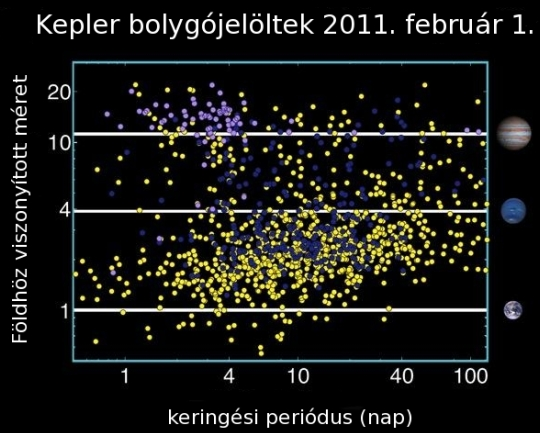

A Kepler űrmisszió
- Bevezetés
- Történet
- A teleszkóp
- A Kepler pályája
- A Kepler-mező és a célpontok
- Start és a fontosabb dátumok
- A Kepler működése
- Kepler-eredmények
A Kepler a NASA Discovery osztályú missziója, melyet 2009 márciusában indítottak útjára. A küldetés célja, hogy Föld méretű bolygókat találjon a lakhatósági zónában tranzit módszerrel, és azok gyakoriságát vizsgálja. A 95 cm-es Schmidt-távcső Föld-követő pályáról rögzített, 105 négyzetfokos területet monitoroz folyamatosan, akár 6 éven keresztül. A pálya eddig elérhetetlen fotometriai pontosságot és stabilitást garantál. A bolygókeresést asztroszeizmológiai vizsgálatok egészítik ki, melyek segítségével a csillagokról és bolygórendszereikről is többet megtudhatunk. A Keplerhez számtalan egyéb asztrofizikai vizsgálat kötődik, melyek mindegyike a korábban elképzelhetetlen pontosságú fotometriai adatok vizsgálatára épül. A misszó Johannes Keplerről (1571-1630), a híres matematikusról és csillagászról kapta a nevét, aki a bolygómozgások róla elnevezett törvényeit dolgozta ki. A Kepler eredményei egy lépéssel közelebb visznek annak a filozófiai kérdésnek a megválaszolásához, hogy egyedül vagyunk-e az Univerzumban?
A Kepler-misszió története több mint 25 évre nyúlik vissza. Rosenblatt (1971) egy cikkében kvantitatív leírást adott arról, hogy a tranzit módszerrel hogyan lehet exobolygók méretét és keringési periódusát meghatározni. Egy másik dolgozatban Borucki és Summers (1984) korrigálták a detektálás valószínűségét, és kimutatták, hogy legalább 13000 csillag földfelszínről történő szimultán megfigyelése elégséges a Jupiter méretű bolygók felfedezéséhez, de a Föld méretű planéták detektálásához elengedhetetlen a légkörön kívülre helyezett teleszkóp. A nyolcvanas években a NASA egy szilícium-fotodiódákon alapuló többcsatornás fotométer fejlesztését és tesztelését szorgalmazta. Később a tervet módosították, a diódákat töltéscsatolt eszközökre (CCDk-re) cserélték. A Kepler elődjét, amit ekkor még FRESIP-nek hívtak (FRequency of Earth-Size Inner Planets: Föld méretű, belső bolygók gyakorisága) 1992-ben javasolták először a NASA-nak. A kilencvenes évek folyamán számos pályázatot utasítottak el; a csoportnak először demonstrálnia kellett, hogy nagyszámú csillag szimultán, nagy pontosságú földi, majd űrbeli fotometriája is megvalósítható. Ennek érdekében megépítettek egy fotométert, mely a Lick Obszervatórium egy használaton kívüli kupolájába került, és távolról működtették. Végül a NASA 2001-ben fogadta el a Kepler koncepcióját. Részletesebb összefoglaló itt érhető el a Kepler-misszió történetéről William Borucki, a Kepler-misszió vezetőjének tollából.
A Kepler egy 95 cm apertúrájú Schmidt-távcső, 1,4 m átmérőjű főtükörrel.
Széles, 105 négyzetfokos (12 fok átmérőjű) látómezeje lehetővé teszi több mint 150000 csillag
folyamatos és szimultán megfigyelését minimum 3,5 évig. A műszer legalább 6 esztendeig képes működni,
így lehetséges, hogy meghosszabbítják a misszió élettartamát, hogy a csillaguktól távolabb keringő
és kisebb bolygókat is találjanak. A berendezés lelke a fókuszfelületre illeszkedő detektorrendszer,
mely 42 CCD-t (töltéscsatolt eszközt) tartalmaz, jellegzetes, kereszt alakú elrendezésben. Minden CCD 2200x1024
pixelből áll, és a telítődés kivédésére 6 másodpercenként történik a kiolvasás. A műszer fehér fényben
érzékeny, vagyis a spektrum látható tartományát fedi le. A fotométer nem készít képeket, csak előre
kiválasztott célpontokhoz tartozó pixelekadatokat tárolnak, és töltenek le. Ez az összes pixelszám mintegy 5%-a.
Azonban technikai okokból havonta egyszer letöltik az összes pixel alkotta képet, ezt full frame image-nek (FFI)
nevezik. A csillagok képe szándékosan defokuszált, ami javítja a fotometriai pontosságot.
A detektorrendszer a laboratóriumban. Fotó: NASA
A jó hatásfokú bolygótranzit-detektáláshoz elengedhetetlen, hogy folyamatosan monitorozzuk a kiválasztott mezőt, ehhez pedig szükséges, hogy a látómező az eklipitka síkjától távol legyen, így a Nap és a Hold nem takarja el azt időről időre. A Kepler-mező ezeknek a feltételeknek megfelel, és a galaktikus síkhoz is közel fekszik, ennélfogva a csillagsűrűség is kellően magas. A Nap-Föld-Hold elkerülésének együttes kritériumát teljesítő optimális pályának egy ún. Föld-követő, 372,5 napos keringési periódusú Nap körüli pálya bizonyult. Ezen a pályán az űreszköz lassan eltávolodik a Földtől, és mintegy fél csillagászati egység távolságra jut a negyedik év végére. Ennek megfelelően az adatátvitelre fordítható sávszélesség is fokozatosan csökken. A napelemtáblák folyamatos megvilágításának érdekében a távcső 90 fokos fordulatot hajt végre a tengelye körül minden negyedévben. A CCD-k elhelyezkedése folytán a látómező változatlan marad, de a célpontok más és más pixelekre és eltérő detektorra esnek. A Q0 a 10 napos üzembehelyezési periódust jelenti, a Q1 33 napig tartott, és Q2 volt a Kepler működésének első teljes negyedéve.
A műszer képes 4-szigma biztonsággal észlelni egy Föld méretű bolygó tranzitját egy mV=12
G2V (Nap típusú) csillag előtt, 6,5 órás integrációval számolva. A bolygótalálat maximalizálása egy, a galaktikus
fősíktól néhány fokra eső terület kiválasztásához vezetett. Ez a csillagmező a Hattyú és a Lant
csillagképek határán helyezkedik el, érintve a Sárkány csillagképet is. A Kepler indítása előtt három ismert
exobolygó volt a területen: a TReS-2, a HAT-P-7b és HAT-P-11b. Érdemes megemlíteni, hogy 4 nyílthalmaz is van a
mezőben, ezek: az NGC 6819, az NGC 6811, az idős NGC 6791 és az NGC 6866, amely a legfiatalabb a négy közül.
A korai Kepler-adatok elemzése 1879 fedési kettőscsillag
felfedezését eredményezte.
 Fotó: Carter Roberts
Fotó: Carter Roberts
A 105 négyzetfokos terület elég nagy ahhoz, hogy sok Nap-szerű csillagot tartalmazzon, ugyanakkor a csillagok
összelógása (blending) ne okozzon kezelhetetlen problémákat. A 150000 fő célpont fényessége 9 és 16 magnitúdó
közé esik, de a műszer akár 20 magnitúdós csillagokat is kellő pontosággal képes észlelni. Bár a 7 magnitúdó
körüli csillagok fénye már erőteljesen szaturálódik (szétfolyik), ez esetben sem lehetetlen az extrém pontos
fényességmérés, minthogy a fluxus nagy pontossággal megőrződik. A csillagok képe 4 ívmásodperc nagyságúra
defokuszált a fotometria pontosság növelése érdekében. Az expozíciós idő 6 másodperc, de 30 percnyi mérést
átlagolnak (long cadence, LC) mielőtt az adatokat havi rendszerességgel letöltik. Azonban a célpontok kis részénél
sokkal gyakoribb mintavételre is lehetőség van, így ezen short cadence (SC) célpontok fénygörbéje
1 perces átlagolású.
 Fotó: NASA/Kim Shiflett
Fotó: NASA/Kim Shiflett
- - 2009. március 7. indítás Cape Canaveralről Delta-II-es hordozórakétával
- - 2009. április 8. első észlelések
- - 2009. május 12. tudományos célú vizsgálatok kezdete
- - 2009. augusztus Az első eredmények korábban ismert exobolygókról és a Kepler teljesítményéről
- - 2010. január Az első exobolygók felfedezése
- - 2010. június 306 fedésibolygó-jelölt bejelentése
- - 2010. augusztus Az első többszörös fedési rendszer felfedezése (Kepler-9b és -9c)
- - 2011. január A Kepler felfedezi az első kőzetbolygót (Kepler-10b)
- - 2011. február A Kepler-11b-g felfedezése: az első rendszer, amely 6 fedési bolygót tartalmaz
- - 2011. február 1235 bolygójelölt közzététele
- - 2011. december Az első Kepler Tudományos Konferencia
- - 2012. február A bolygójelöltek száma 2321-re emelkedik
- - 2012. április A Keplert 4 évvel meghosszabbították
- - 2012. november A kiterjesztett Kepler-misszió kezdete
A program működtetését és igazgatását több szervezett végzi összehangoltan. Ebben vezető
szerepet játszik a NASA Ames Kutatóközpontja (Moffett Field, Kalifornia), ezenkívül a
Légkör- és Űrfizikai Laboratórium (LASP), a Ball Aerospace & Technologies Corp., a
NASA Sugárhajtómű Laboratóriuma (JPL) és az Űrteleszkóp Tudományos Intézet (Space Telescope
Science Institute, STScI). A telekommunikációt és a navigációt a NASA hálózata (Deep Space Network)
biztosítja.
A Kepler három különböző kutatói körnek végez megfigyeléseket:
(1) 150000 Nap típusú, fősorozati csillag körül folyik a bolygókeresés. A nyers adatok redukálását és
a további adatfeldolgozást a Kepler Science Office végzi. A bolygókeresés, a jelöltek rangsorolása, a
megerősítő észlelések és az adatok értelmezése a Kepler Science Team és meghívott munkatársak
kizárólagos feladata.
(2) A Kepler Asztroszeizmológiai Tudományos Konzorcium (KASC)
mintegy 6000 csillag pulzációját és oszcillációit vizsgálja. A szeizmológiai eredmények a bolygókutatást is segítik,
hiszen pontos tömeg-, sugár- és koradatot szolgáltatnak a bolygók gazdacsillagairól. A pulzáló változócsillagok
minden típusának képviselői szerepelnek a KASC listáján, ezek mindegyikéről eddig elérhetetlen pontosságú
és folyamatos adatokat szállít a Kepler-űrtávcső.
(3)
A Kepler Guest Observer programon (GO) keresztül mindenki
pályázhat Kepler-megfigyelésekre évente egyszer. Mindenféle célpont megfigyelésére van lehetőség, (pl. fedési
kettősök, aktív csillagok, kataklizmikus változók, aktív galaxismagok stb.), az exobolygókat kivéve. A Guest
Observer programra 3000 long-cadence és 25 short-cadence célpontot biztosítanak.
HAT-P-7b
 Illusztráció: NASA
Illusztráció: NASA
Röviddel a tudományos program kezdete után a Kepler a korábban felfedezett HAT-P-7b exobolygón
demonstrálta teljesítőképességét. Nemcsak a másodlagos feédseket fedezte fel (amikor a bolygó a
csillag mögé kerül), hanem a rendszer lassan változó kicsiny fényváltozását is kimutatta, ami a forró Jupiter
típusú bolygó fázisváltozásának tulajdonítható. A jelenség hasonló a Naprendszer belső bolygóinak (Merkúr
és Vénusz) fázisváltozásához. A megfigyelés bizonyította, hogy a Kepler elérte a Föld-méretű bolygók
tranzitjának kimutatásához szükséges pontosságot.
Az első öt Kepler-exobolygó
 Illusztráció: NASA
Illusztráció: NASA
Az első 43 nap megfigyelési adatainak vizsgálata 5 új Kepler-exobolygó felfedezéséhez vezetett, ezek:
Kepler-4b, -5b, -6b, -7b és -8b. A keringési periódusaik rövidek, 3,2 és 4,9 nap közé esnek. Négy közülük
forró Jupiter, míg a Kepler-4b a Neptunuszhoz hasonló. Felszíni hőmérsékletük 1500-2000 K közé esik.
Kepler -9: az első többszörös fedési bolygórendszer
 Illusztráció: NASA
Illusztráció: NASA
A Kepler-9 az elsőként felfedezett olyan exobolygórendszer, ahol egynél több bolygó is elfedi a központi csillag korongjának
egy részét.
A Kepler-9b and -9c jelű bolygók Szaturnusz-méretűek, keringési periódusuk 19 és 38 nap. Az 1:2 arányú rezonancia
erős kölcsönös gravitációs kölcsönhatást jelent a két bolygóra nézve, és megerősíti, hogy a két égitest valóban
ugyanazon csillag körül kering. Ezenfelül a rezonancia hatását felhasználva a bolygók tömegét is kiszámíthatjuk, anélkül,
hogy földi spektroszkópiai méréseket kellene igénybe vennünk. A rendszerben egy további forró szuperföldet (Kepler-9d) is
találtak, melynek keringési periódusa 1,6 nap, sugara pedig másfélszerese a Földének.
A Kepler első kőzetbolygója: a Kepler-10b
 Illusztráció: NASA
Illusztráció: NASA
A Kepler-10b a legkisebb kőzetbolygó volt felfedezésekor. Mérete 1,4-szerese bolygónkénak, tömege 4,6 Föld-tömeg.
Átlagos sűrűsége 8,8 g/cm3, ami a tiszta vasnak felel meg. A planéta szülőcsillaga idős,
alacsony aktivitást mutató Nap-szerű csillag. A keringési periódus mindössze 20 óra, ennek megfelelően a bolygó
becsült felszíni hőmérséklete 1800 K, emiatt szilárd felszín helyett lávaóceán boríthatja a bolygót.
Az első hat fedési bolygót
tartalmazó rendszer: a Kepler-11
 Illusztráció: NASA
Illusztráció: NASA
A figyelemre méltó Kepler-11 rendszer 6 fedési exobolygót tartalmaz. Mindegyik szuper-Föld méretű: 2,0-4,5
Föld-sugarú. A bolygórendszer dinamikai értelemben telített (a stabilitás veszélyeztetése nélkül nem
lehetnének közelebb a bolygók) és meglepően lapos (azaz közel egy síkban keringenek az égitestek). A belső
öt planéta a Vénusz pályáján belül mozogna, ha a Naprendszerbe helyeznénk őket. Keringési periódusuk 10 és 47 nap
közé esik, míg a hatodik bolygó (Kepler-11g) 118 napos periódusú. A felfedezés fontos információkkal
szolgál a bolygórendszerek kialakulásával, fejlődésével és dinamikájával kapcsolatban.
1235 bolygójelölt
 Illusztráció: NASA
Illusztráció: NASA
2011. február 2-án a NASA egy lélegzetelállító, 1235 bolygójelöltből álló listát tett közzé. A lista elérhető
a MAST adatbázisban. Egyes becslések alapján a jelöltek akár 50-80%-a is
valódi bolygónak bizonyulhat. A talált rendszerek között 170 több bolygót tartalmaz, 68 Föld méretű planéta (néhányuk
még kisebb, Mars méretű is van köztük), 54 kering a lakhatósági zónában, ami azt jelenti, hogy akár folyékony
víz is lehet a felszínükön. Öt Föld méretű bolygójelölt kering a központi csillaga által kijelölt lakhatósági zónában.
Ezek a csillagok kisebbek és halványabbak Napunknál. A mai csillagászat Szent Gráljait, a Nap-szerű csillagok körül, a
Földhöz hasonló pályán keringő, Föld méretű bolygókat a Kepler-program később, több fedés megfigyelésével fogja
felfedezni. Ez az öt objektum kiemelkedően érdekes, mert ezek potenciálisan alkalmasak lehetnek az élet hordozására.
Az alábbi ábrán a bolygójelöltek mérete látható a keringési periódusuk függvényében.

Illusztráció: NASA
További eredmények, felfedezések:
Kepler-felfedezések, cikkek
Kepler exobolygós eredmények
Asztrofizika a Keplerrel
A Kepler Science
Operations Center technikai publikációi